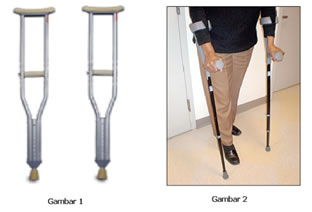
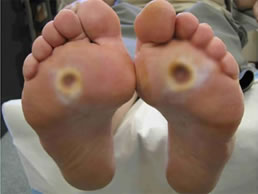
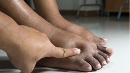
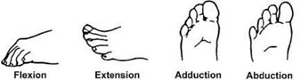

Pemeriksaan Ekstrimitas
Pemeriksaan Ekstrimitas
Pemeriksaan :
Inspeksi dan Palpasi Keadaan Ekstrimitas
Cara Kerja :- Membandingkan tangan kanan dan kiri
- Menilai adanya perubahan warna: hematom, echymosis, dll
- Menilai adanya edema dan tanda – tanda inflamasi
- Menilai adanya tanda-tanda deformitas
- Meraba kulit untuk menilai suhu
- Melakukan penekanan ringan untuk menilai nyeri
- Menilai perubahan warna pada telapak tangan : sianosis, ganggrene, rheumathoid arthritis dll
- Kuku : lihat bentuk dan warna : clubbing finger
Gambar :
Keterangan : Hematome (A hematoma is defined as a solid swelling of clotted blood within the body’s tissues.)
Gambar :
Keterangan :Ecchymosis is a skin discoloration that results from bleeding underneath the skin and usually larger than 1 cm or 4 inches
Gambar :
Keterangan : Edema
Gambar :
Keterangan : Sianosis
Keterangan : Ganggrene
Keterangan : Rheumathoid Arthritis
Gambar :
Keterangan : Clubbing Finger
Cara kerja Aktif dan Pasif
Pemeriksaan :
(1) Bahu : elevasi, depresi
Memberikan perintah :- Elevasi: menggerakan tulang belikat ke atas (superior).
- Depresi: menggerakan tulang belikat ke bawah (inferior)
(2) Siku : fleksi, ekstensi
Memberikan perintah :- Fleksi: merupakan gerakan menekuk sendi atau memperkecil sudut antar dua tulang.
- Ekstensi: merupakan kebalikan dari fleksi yaitu memperbesar sudut antar dua tulang
(3) Lengan bawah : supinasi, pronasi
Memberikan perintah :- Pronasi: memutar lengan sehingga telapak tangan menghadap posterior (ke belakang) ketika tangan diluruskan. Apabila siku ditekuk 90 derajat, maka gerakan pronasi akan membuat telapak tangan menghadap ke bawah (inferior).
- Supinasi: memutar lengan sehingga telapak tangan menghadap anterior (ke depan) ketika tangan diluruskan. Apabila siku ditekuk 90 derajat, maka gerakan supinasi akan membuat telapak tangan menghadap ke atas (superior).
(4) Pergelangan tangan : fleksi, ekstensi, hyperekstensi, abduksi, adduksi
Memberikan perintah :- Fleksi: merupakan gerakan menekuk sendi atau memperkecil sudut antar dua tulang.
- Ekstensi: merupakan kebalikan dari fleksi yaitu memperbesar sudut antar dua tulang
- Adduksi: menggerakkan anggota gerak mendekati bagian tengah tubuh (medial).
- Abduksi: menggerakkan anggota gerak menjauhi bagian tengah tubuh (lateral).
- fleksi
- ekstensi
- hiperekstensi
- abduksi
- adduksi
(5) Jari : abduksi, adduksi, fleksi, ekstensi, ekstensi, oposisi
- Adduksi: menggerakkan anggota gerak mendekati bagian tengah tubuh (medial).
- Abduksi: menggerakkan anggota gerak menjauhi bagian tengah tubuh (lateral).
- Oposisi: gerakan melingkar pada ibu jari.

Cara kerja Aktif dan Pasif
Pemeriksaan :
(1) Biceps
Memberikan perintah :- Fleksikan siku klien, letakkan lengan bawah klien diatas paha dengan posisi telapak tangan menghadap keatas.
- Letakkan ibu jari tangan kiri, diatas tendon bisep klien.
- Perkusi ibu jari pemeriksa dengan reflek hummer.
- Amati adanya fleksi ringan yang normal pada siku klien, rasakan kontraksi otot bisep.
Refleks Biceps
(2) Triceps
Memberikan perintah :- Fleksikan siku klien, sangga lengan klien dengan tangan nondominan.
- Palpasi tendon trisep sekitar 2-5 cm diatas siku.
- Perkusi reflek hummer pada tendon trisep.
- Amati adanya ekstensi ringan yang normal pada siku.
Refleks Triceps
(3) Refleks Brachioradialis
Memberikan perintah :- Letakkan lengan klien dalam posisi istirahat (pronasi).
- Ketukkan reflek hummer secara langsung pada radius 2-5 cm diatas pergelangan tangan atau processus stiloid
- Amati adanya fleksi dan supinasi normal pada lengan klien, jari-jari tangan sedikit ekstensi
(4) Kekuatan Otot Tangan
Inspeksi dan Palpasi
Pemeriksaan :
Inspeksi dan Palpasi Keadaan Ekstrimitas
Cara Kerja :
- Melihat apakah pasien menggunakan alat bantu jalan seperti tongkat dan pada sisi sebelah mana 
- Menilai apakah posisi tubuh pasien lurus ataukah terdapat kemiringan pada daerah pelvis 
- Membandingkan warna kulit pada sendi dan daerah sekitar, nilai ada tidaknya hematom, echymosis, ulkus dll
- Menilai tanda-tanda kontraktur fleksi pada hip/panggul, lutut dll
- Menilai ada tidaknya edema 
Alat bantu jalan
Ulkus diabetikum

Kontraktur sendi lutut
Edema kaki (pitting edema)
Pemeriksaan :
1) Pangkal paha : abduksi, adduksi, rotasi ke dalam, rotasi keluar
Cara Kerja :
- Adduksi: menggerakkan anggota gerak mendekati bagian tengah tubuh (medial).
- Abduksi: menggerakkan anggota gerak menjauhi bagian tengah tubuh (lateral).
- Rotasi : menggerakkan sendi dengan cara memutar pada sumbu vertikal tulang. Gerakan rotasi dapat bergerak ke dalam (internal) maupun ke luar (eksternal).


2) Lutut : fleksi, ekstensi (depan belakang)
- Fleksi: merupakan gerakan menekuk sendi atau memperkecil sudut antar dua tulang.
- Ekstensi: merupakan kebalikan dari fleksi yaitu memperbesar sudut antar dua tulang.

3) Pergelangan Kaki : Dorsifleksi, Plantar Fleksi, Inversi, eversi
- Dorsofleksi: menggerakan telapak kaki ke arah depan atau atas.
- Plantarfleksi: kebalikan dari dorsofleksi yaitu menggerakkan telapak kaki ke bawah atau belakang.
- Inversi: menggerakkan sendi kaki ke arah dalam.
- Eversi: menggerakan sendi ke arah luar.


4) Jari kaki : ekstensi, fleksi, Abduksi, adduksi
- Fleksi: merupakan gerakan menekuk sendi atau memperkecil sudut antar dua tulang.
- Ekstensi: merupakan kebalikan dari fleksi yaitu memperbesar sudut antar dua tulang.
- Adduksi: menggerakkan anggota gerak mendekati bagian tengah tubuh (medial).
- Abduksi: menggerakkan anggota gerak menjauhi bagian tengah tubuh (lateral). 
Pemeriksaan :
1) Refleks Patellar
Cara Kerja :
- Minta klien duduk ditepi meja periksa agar kaki klien dapat menjuntai dengan bebas tidak menginjak lantai.
- Tentukan lokasi tendon patella yang berada tepat dibawah patella (tempurung lutut).
- Ketukkan reflek hummer langsung pada tendon patela.
- Amati adanya ektensi kaki atau tendangan kaki yang normal.

Refleks Patella
2) Refleks Achilles
- Minta klien duduk ditepi meja periksa agar kaki klien dapat menjuntai dengan bebas tidak menginjak lantai.
- Dorsofleksikan sedikit pergelangan kaki klien dengan menopangkan kaki klien pada tangan Pemeriksa.
- Ketukkan reflek hummer pada tendon Achilles tepat diatas tumit.
- Amati dan rasakan plantar fleksi (sentakan kebawah) yang normal pada kaki klien.
Refleks Achilles
3) Kekuatan Otot Kaki
Inspeksi dan Palpasi

Dropdown content#1